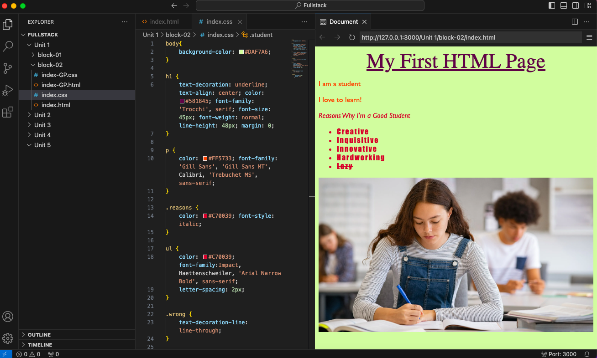
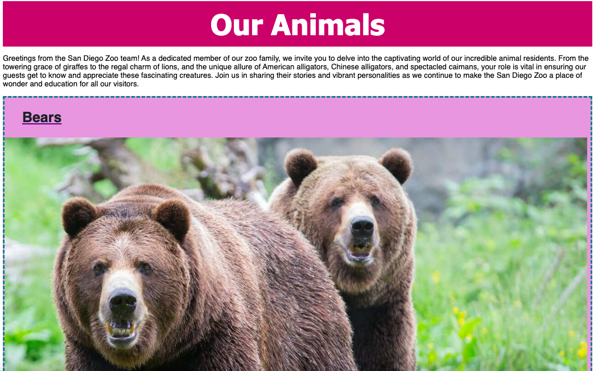
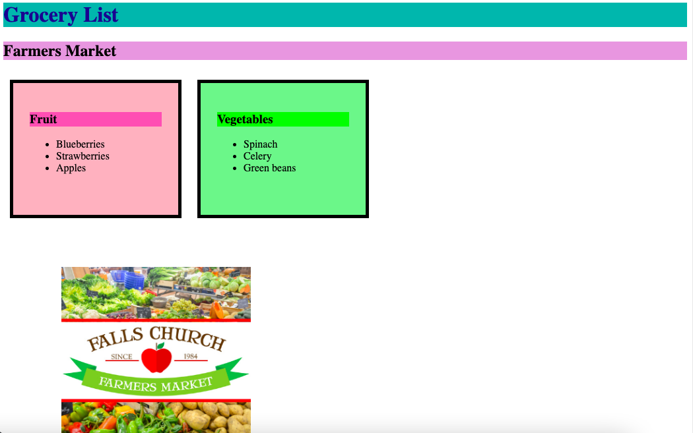

Portfolio
Here's a collection of my projects.
Block 02: My First Website
Assignment Directions: Make a simple, single-page application. Add a header and two paragraph tags between the body tag. Add CSS with background color, text decoration, alignment, and color.
Block 05: The Zoo Problem
Assignment Directions: Create a zoo page using HTML semantic tags (header, footer, article, section, summary). Begin with a main header and a title for the browser tab. Organize content with headings for animal types (Bears, Giraffes, Lions, Monkeys, Alligators), listing individual names. Include descriptions using paragraph, section, or article tags. Add links for each animal leading to external fact pages for quick access to more information. Embed photos for visual appeal. Enhance code readability with appropriate comments throughout.
Block 06: Grocery List
Assignment Directions: Your goal is to create an HTML file that has food photos, different categories of grocery items and list the different items.
